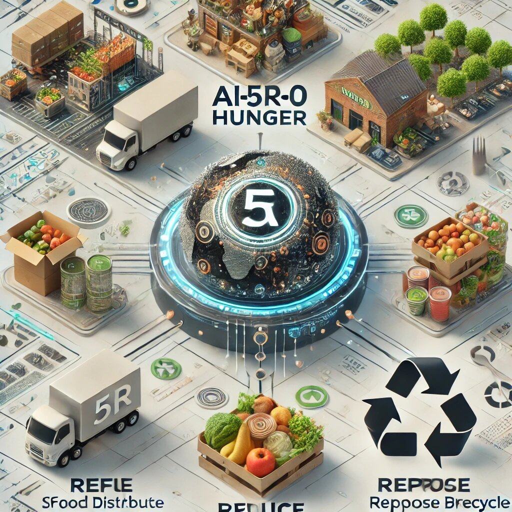

Innovating for a Sustainable Future
At AI5R0Hunger, we harness the power of Artificial Intelligence to combat global hunger while promoting sustainability. Our mission aligns with the United Nations’ Sustainable Development Goal (SDG) of Zero Hunger, focusing on improving food access, reducing waste, and encouraging green innovation such as Green Roofs.
We say NO to waste from the beginning. AI5R0Hunger helps reject overproduction by using AI to forecast demand, avoiding unnecessary farming, packaging, and shipping. This reduces food waste before it even starts.
Using AI, we optimize food supply chains, reduce spoilage, and help households lower food waste. Our Green Roof systems also reduce the need for long-distance transportation and excess packaging.
We promote giving second life to surplus food through redistribution to those in need. Rooftops are reused as farms, and leftovers are tracked with AI to be creatively reused rather than wasted.
Food scraps become compost, rooftops become gardens, and unused areas become sources of food production. AI helps guide these transformations based on local needs and conditions.
We encourage eco-friendly packaging, composting of organic waste, and recycling of tools and materials. The nutrients go back into the soil to grow more — completing the sustainable cycle.
Our unique AI system helps communities grow vegetables and herbs on rooftops, guided by local weather, soil, and sunlight data. This not only reduces food transport needs but transforms homes into mini food sources, boosting self-reliance.
Through data-driven decisions, predictive analytics, and smart logistics, AI5R0Hunger is building a hunger-free world. Whether you're a student, a farmer, a volunteer, or just passionate about the planet — we invite you to join our mission.